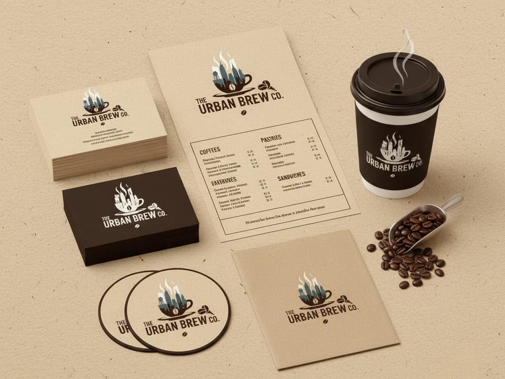
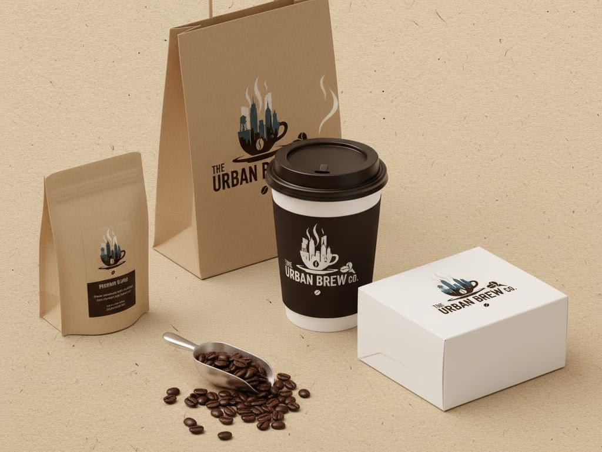
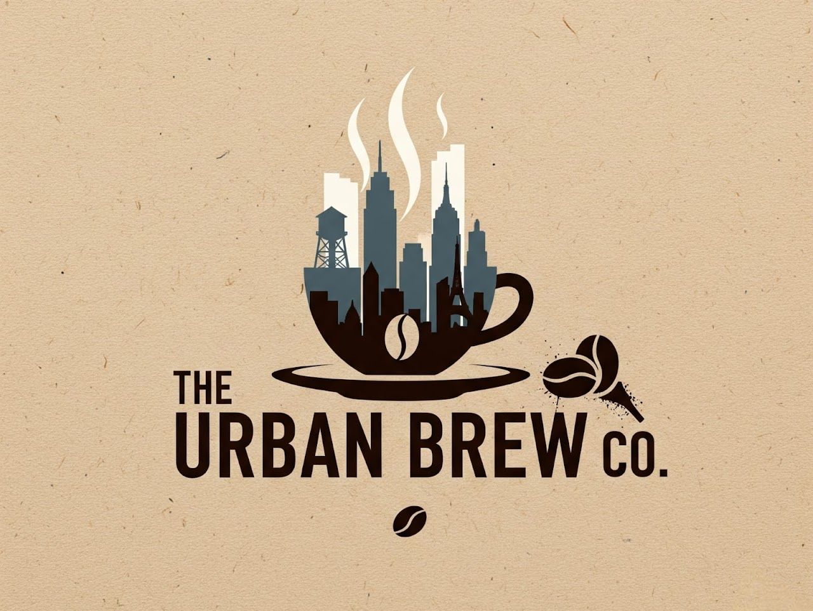

Project Name: The Urban Brew Co.
We had the privilege of creating a new brand identity package for "The Urban Brew Co." — a modern, stylish look that resonates with their target audience of young, urban customers.



Our Approach
We began by diving deep into the vision and personality of "The Urban Brew Co." to understand what made the brand unique. The goal was to build a visual identity that reflected both the vibrant energy of city life and the comforting experience of a great cup of coffee. Through collaborative discussions with the client, we identified key brand values such as simplicity, modernity, and approachability.
From these insights, we crafted a design direction centered around clean lines, balanced typography, and a minimalist aesthetic. The approach ensured the brand would feel contemporary and sophisticated while remaining warm and welcoming to customers. By focusing on clarity and consistency, we created a visual language that could be applied seamlessly across all brand touchpoints.
Services Provided
Logo Design:We developed a minimalist logo that cleverly combines the shape of coffee beans with elements of a city skyline. This design symbolizes the fusion of premium coffee culture with the fast-paced urban environment. The final logo is simple yet distinctive, making it highly versatile for use across signage, packaging, and digital platforms.
Branding Collateral: To ensure brand consistency, we designed a full set of branded materials that reinforce the identity in every customer interaction. This included sleek business cards, menu layouts, loyalty cards, and coasters, all featuring cohesive typography, color palettes, and visual elements that align with the brand’s modern style.
Packaging Design: Packaging plays a vital role in a café’s brand experience, especially for takeaway orders. We created eye-catching takeaway cups, coffee sleeves, and bags that not only protect the product but also act as mobile advertisements for the brand. The designs were crafted to stand out in busy urban environments while maintaining a clean, premium look.
Visual Brand Guidelines To maintain consistency as the brand grows, we also developed a concise brand guideline document outlining logo usage, color systems, typography rules, and layout standards. This ensures that future marketing materials remain aligned with the original design vision.
Results
The final brand identity gave "The Urban Brew Co." a fresh, cohesive, and memorable presence that resonates strongly with its urban audience. The minimalist yet distinctive design helps the café stand out in a competitive market while communicating quality and sophistication.
The consistent branding across packaging, print materials, and in-store visuals has enhanced the overall customer experience, making the brand instantly recognizable. As a result, the café has successfully strengthened its market presence, attracted new customers, and built a loyal community around its brand.